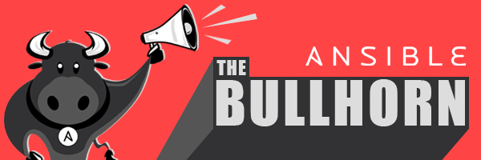

Bullhorn #6

The Bullhorn
A Newsletter for the Ansible Developer Community
Welcome to The Bullhorn, our newsletter for the Ansible developer community. If you have any questions or content you’d like to share, please reach out to us at the-bullhorn@redhat.com.
ANSIBLE 2.8.13 AND 2.9.10 RELEASED
The Ansible Core team announced the availability of Ansible 2.9.10 on June 19th, and Ansible 2.8.13 on July 15th, both of which are maintenance releases. Follow the links for Rick Elrod’s emails to the ansible-devel mailing list, to obtain details on what’s new, installation instructions, and links to the full changelogs.
VIRTUAL ANSIBLE CONTRIBUTOR SUMMIT RECAP
The second fully virtual Ansible Contributor Summit was held on July 6th. Almost 70 contributors - new and existing - joined us over the course of the day, around 20 more than the previous event. You can check out the videos from the summit, as well as the summary and full log from the IRC session.
On July 7-8, we held the virtual Ansible Hackathon, in which we followed up on the issues that were discussed during the contributor summit. Both a summary and full log are available for the hackathon as well.
These new collections were created during the event: community.digitalocean, community.proxysql, and community.mysql. Thanks to our community contributors!
We would appreciate your feedback to help us improve the Contributor Experience, whether or not you were able to attend the event. Here is the Contributor Survey; please take a couple of minutes to fill this in (if you haven't already).
The next Contributor Summit will be on October 12, 2020. It will once again be a virtual experience, along with AnsibleFest in the same week. When we have more details, we will share them in future issues of The Bullhorn!
On July 7-8, we held the virtual Ansible Hackathon, in which we followed up on the issues that were discussed during the contributor summit. Both a summary and full log are available for the hackathon as well.
These new collections were created during the event: community.digitalocean, community.proxysql, and community.mysql. Thanks to our community contributors!
We would appreciate your feedback to help us improve the Contributor Experience, whether or not you were able to attend the event. Here is the Contributor Survey; please take a couple of minutes to fill this in (if you haven't already).
The next Contributor Summit will be on October 12, 2020. It will once again be a virtual experience, along with AnsibleFest in the same week. When we have more details, we will share them in future issues of The Bullhorn!
UPDATES FROM THE WORKING GROUPS
Diversity (NEW!)
- The Ansible community has launched a new working group focused on improving diversity and inclusion in the project. Community members looking to get involved with this initiative can join #ansible-diversity on Freenode IRC. You can also check out the announcement made at the Virtual Ansible Contributor Summit last week.
STATS UPDATE
Greg 'Gwmngilfen' Sutcliffe, our team stats person, has been hard at work on some of the suggestions that came out of the Contributor Summit. One such idea, from Jeff Geerling, was some kind of heatmap of contributors, so that we can see where there is activity, and also potentially some "bus-factor". Here's a first cut of that map:
The colour ranges from "1 contributor" in red to "lots" in pool, with white centred at 5 unique contributors.
Community.General has such a large number of contributors that it overshadows the others - but note how many collections are <5 contributors for any single file, but largely healthy at the directory level, which is good to see! You can see a bigger version on the Ansible Stats pages if you want to zoom in.
COMMUNITY CONTENT
Every month we notice the community posting great content. Although not all strictly developer focussed, maybe there’s an article or two here that piques your interest? Let us know if you’d like to see more of this.Evgeni Golov details how they mass-migrated modules inside an Ansible Collection for the Foreman project, complete with the script used.
Wu shares how he manages Windows Servers with Ansible on CentOS 8.
Here’s Part 1 and Part 2 of Kubernetes Configuration Management with Ansible by Baptiste Mille-Mathias, who also joined us at the virtual contributor summit.
Tadej Borovšak of XLAB Steampunk covers an important topic - testing - with Adding integration tests to Ansible Content Collections.
Nicolas Leiva describes how you can make your favorite Python library an Ansible module to Automate a Network Security Workflow.
Carol Chen, part of the Ansible Community team, talks about connecting and growing your community with examples from the Ansible community meetup groups.
ANSIBLE VIRTUAL MEETUPS
The following virtual meetups are being held in the Ansible community over the next month:Ansible in DevOps Torun-Bydgoszcz: QA in DevOps World
Wed, Jul 15 · 5:00 PM GMT+2
https://www.meetup.com/Ansible-in-DevOps-Torun-Bydgoszcz/events/271620303/
Ansible Minneapolis: Using Ansible to Create AWS AMI Images
Thu, Jul 16 · 6:30 PM GMT-5
https://www.meetup.com/Ansible-Minneapolis/events/sbqkgrybckbvb/
Ansible India Meetup: Getting Started with Ansible Network Automation
Sat, Jul 18 · 9:45 AM GMT+5:30
RSVP with one of the meetup groups “near” you: Aurangabad, Bangalore, Chennai, Delhi, Hyderabad, Kolkata, Mumbai, Pune! (They will link to the same virtual event.)
Ansible Fort Worth/Dallas: Multicloud Networking Leveraging Ansible and Pureport
Tue, Jul 28 · 4:00 PM GMT-6
https://www.meetup.com/Ansible-Fort-Worth/events/271912439/
https://www.meetup.com/Ansible-Dallas/events/271912537/
Ansible New Zealand: building stateless self configuring Ansible Clusters
Thu, Aug 13 · 12:00 PM GMT+12
https://www.meetup.com/Ansible-New-Zealand/events/271707416/
Here is the playlist from the previous Ansible India Meetup held on June 27.
Note: For these virtual events, the links to participate in the meetups will be visible once you RSVP to attend. If you’re interested in the topics presented, you can join from anywhere in the world as long as the time zone and language works for you!
FEEDBACK
Have any questions you’d like to ask, or issues you’d like to see covered? Please send us an email at the-bullhorn@redhat.com.